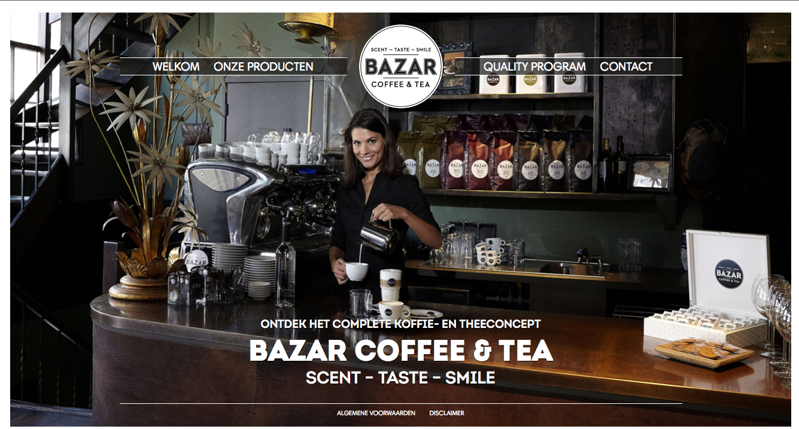
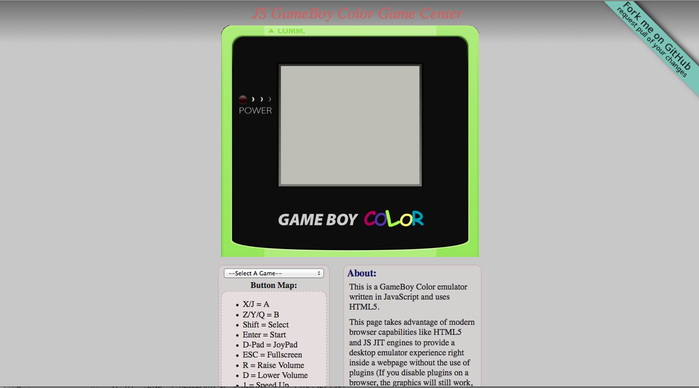

Better hierarchy for the better HTML5 King..."thang"
Coconut game
http://www.logicking.com/games/CoconutBeach/

Even though this is part of the showcase, this doesn't have that much html5 structure, at least from what I can tell, this is more of a flash that seems to draw inspiration from angry birds and from what the outliner tells me, this site only has one Untitled Section so by fixing that, then one thing the designer can do is either give the section a heading or remove it altogether.
Bazar Coffee Shop
http://www.bazarcoffeeandtea.com/

For all you caffeine addicts, this is one website you want to go to since as the website describes a coffee shop from somewhere in the world and shows the different kinds of drinks they have from coffees to expressos and lattes to the little delicious sweet snacks they have available like cookies or "crumpets", while invoking an environment where you can just put your legs up to relax. Now when you see a site that looks this pretty, it gives the attention that it's nothing but a pile crap with a golden sheen. But that doesn't seem to be the case as from the outliner, it is very well structured with a really good hierarchy with it's only problem being that it has some Untitled Sections at the top of the hierarchy and by adding headings or removing some of them should fix the problem.
Gameboy Emulator
http://gamecenter.grantgalitz.org/

Now this is cool, I felt big rush of nostalgia when playing around this site. It acts as an emulator for old Game Boy color games by using HTML5 and JavaScript in a way that I don't get so I won't even try to explain here. In the outliner, the only thing that shows is a titled section with the word About,while it's not wrong, it would have been better if the web designer could explain what that section even means or what it is about exactly.
Journals and Stuff
http://marqueemedia.com/
While I don't have the whole idea about this website (or maybe I do), I think this site let's users read all sorts of topics and content form different categories, however I can't seem to find the content and the site is giving me a clear direction. But At least it looks really good from the Outliner, because I'm seeing a lots of really good and clean structure and hierarchy from the nearly every page, with a few sections and subsections either being empty or Untitled. That can fixed be filling the empty sections and giving headings to the others.